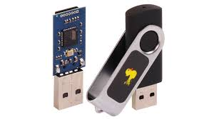
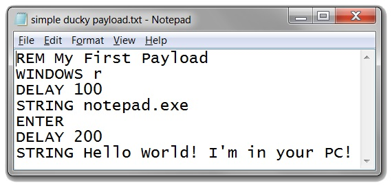

Rubber Ducky
Rubber Ducky

The Basics
The Rubber Ducky is a microchip with a USB connector that pretends to be a keyboard. The attacker plugs it into a port on the target computer, and the Ducky runs a script to execute whichever commands the attacker desires. The computer sees these commands as legitimate input from the keyboard (the Ducky pretends to be typing them), which lets the attacker act as the user, bypassing most normal security.
At its most basic level, this works because keyboards, and USBs in general, are trusted to be what they say they are. The computer has no way of inherently recognizing the difference between a USB, a keyboard, and a mouse; they all plug into the same port. Legitimate devices will send a code indicating what they are, but this opens the door for the Ducky to claim that it is something it is not.
A variety of premade scripts are available online, for everything from installing backdoors and stealing passwords to changing someone's background as a prank. The Rubber Ducky is simple to setup, easily configurable, and extremely powerful.